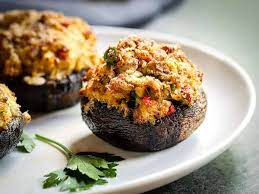

Stuffed Mushrooms

Stuffed crab Mushroom
Incredibly easy and taste even better! There are never any left over!
Ingredients
- 36 fresh mushrooms
- 1 (8 ounce) package cream cheese, softened
- 1 (6 ounce) can crab meat, drained
- ½ teaspoon garlic salt
Steps
- Preheat the oven to 350 degrees F (175 degrees C).
Lightly grease a baking sheet with non-stick cooking spray.
- Stem the mushrooms. Reserve 1/3 to 1/2 of the stems and mince them.
- Whip the cream cheese until smooth.
- In a small bowl, combine minced mushroom stems and crabmeat. Blend the cream cheese into the stem
and clam mixture. Add garlic salt and mix well. Stuff the mushroom caps
with the cheese mixture. Arrange the caps on the prepared baking sheet.
- Bake mushrooms at 350 degrees F (175 degrees C) for 20 minutes,
or until the mushrooms and crab mixture are hot, and most of the
liquid from the mushrooms has collected in the pan.